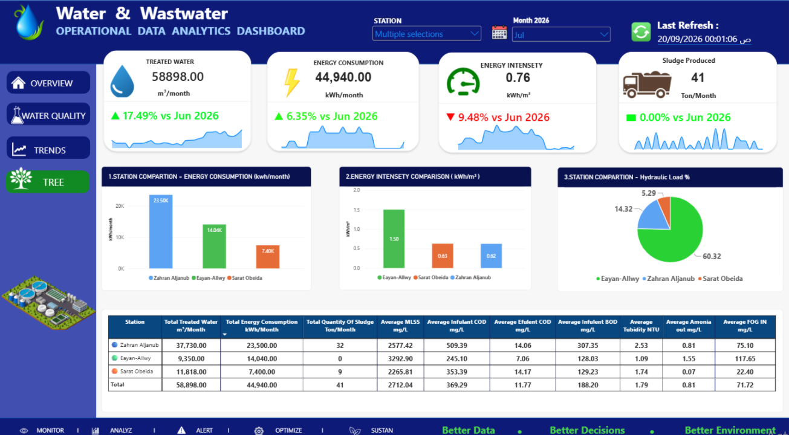
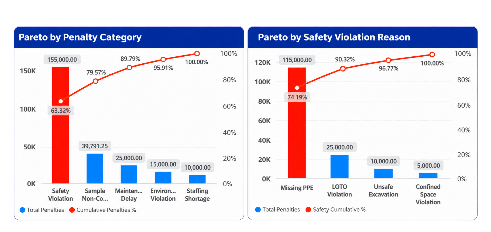
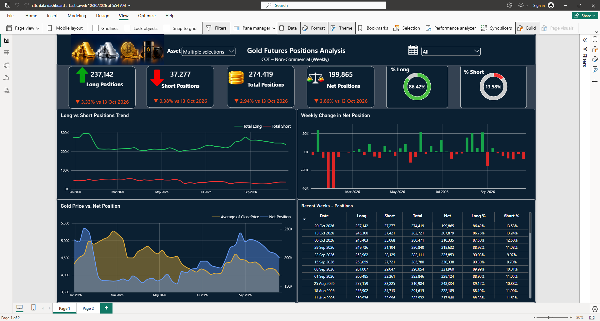
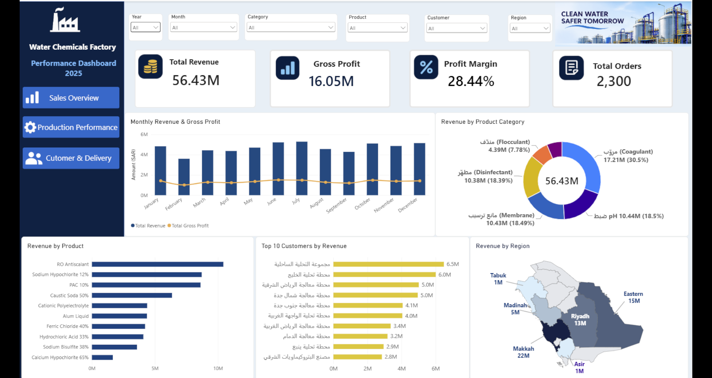

About Me
Chemistry graduate with 10 years of experience in the water and wastewater sector, combining operational expertise with data analytics to support better decisions.
Technical Skills
Featured Projects
Water & Wastewater Operational Performance Dashboard

An interactive, four-page Power BI dashboard comparing operational performance, water quality, daily trends, and environmental sustainability indicators across three treatment plants.
- Plant-level operational KPI comparisons and hydraulic loading
- COD/BOD removal efficiency and effluent quality monitoring
- Energy intensity (kWh/m³), daily trends, and sludge production
- Tree planting, green area, and estimated CO₂ sequestration
O&M Contract Financial Dashboard

An interactive Power BI dashboard for monitoring financial performance throughout a 36-month Operations & Maintenance contract.
- Financial progress vs. time progress
- Monthly net statements
- Deductions and penalties
- Spare parts budget utilization
- Contract financial performance
Contract Penalties Analysis

An interactive Power BI dashboard designed to analyze contract penalties across wastewater treatment plants, identify major causes of non-compliance, and support operational improvement decisions.
Key Insights
- Total penalties analyzed: SAR 95,105.99
- Total penalty cases: 9
- FOG-related penalties: 81.26% of total penalty value
- Pareto analysis of water quality parameters
- Penalty comparison across three treatment plants
- Monthly penalty trends and detailed records
Tools & Techniques
Power BI | Power Query | DAX | Data Modeling | Pareto Analysis | KPI Development
O&M Penalties | Pareto Analysis Case Study

A Power BI case study applying Pareto Analysis to Operations & Maintenance contract penalties to identify major cost drivers and prioritize corrective actions.
Key Insights
- Total penalties analyzed: SAR 244,791.25
- Safety violations account for 63.32% of penalties
- Missing PPE represents 74.19% of safety penalties
- Safety and sample non-compliance account for 79.57% combined
- Priority actions include PPE compliance, LOTO training, and CAPA
Tools & Techniques
Power BI | DAX | Pareto Analysis | Root Cause Analysis | KPI Development | Operational Analytics
Illustrative dataset used for analytical demonstration.
CFTC Dashboard | When Data Challenges Expectations

I spent two days building a Power BI dashboard to explore whether CFTC speculative positioning could help identify gold market tops and bottoms. The results were disappointing: Pearson correlation was weak and sometimes inverse, and the analysis did not reveal a reliable predictive signal.
Rather than hiding that result, this case study shares the original hypothesis, the analytical process, and what I learned when the data challenged my expectations.
Key Insights
- Compared weekly Long, Short, and Net speculative positions with market prices
- Explored Gold, Silver, Bitcoin, and Crude Oil markets
- Tested the relationship using Pearson correlation
- Found no dependable standalone signal for identifying gold market tops or bottoms in the analyzed period
Tools & Techniques
Power BI | Excel | Power Query | DAX | Data Modeling | Pearson Correlation | Hypothesis Testing
Water Chemicals Factory | Performance Dashboard 2025

An interactive three-page Power BI dashboard analyzing sales, production efficiency, inventory, customer delivery, and financial performance in a water chemicals factory. Built using a training dataset.
Dashboard Pages
- Sales Overview: Revenue, gross profit, profit margin, product performance, and regional sales.
- Production Performance: Planned vs actual production, production achievement, downtime, yield, and inventory.
- Customer & Delivery: On-time delivery, payment collection, outstanding revenue, and customer complaints.
Tools & Techniques
Power BI | Excel | Power Query | DAX | Data Modeling | KPI Development